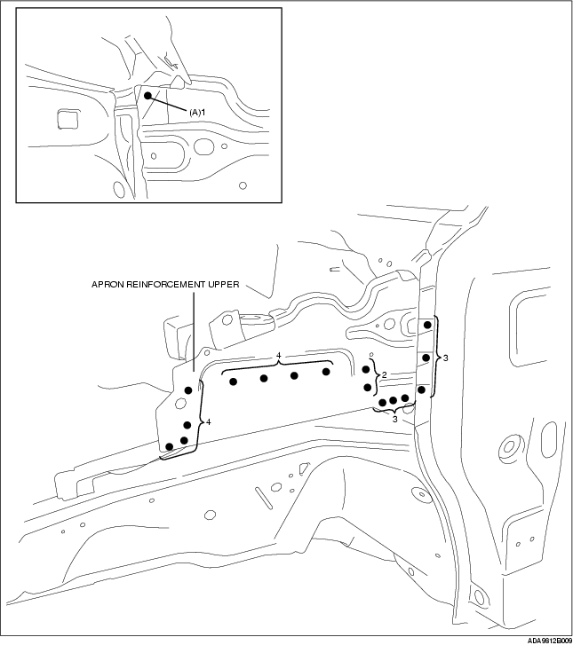

Apron reinforcement upper removal 1. Weld location (A) cannot be determined from the outer side. Drill 1 weld location (A) from the engine compartment side. 2. Remove the apron reinforcement upper. 